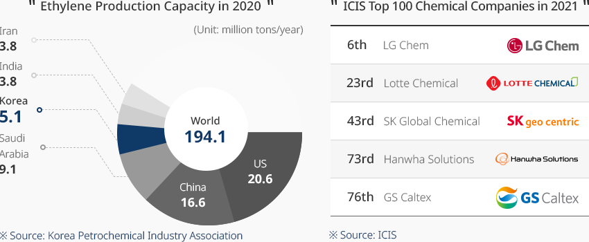
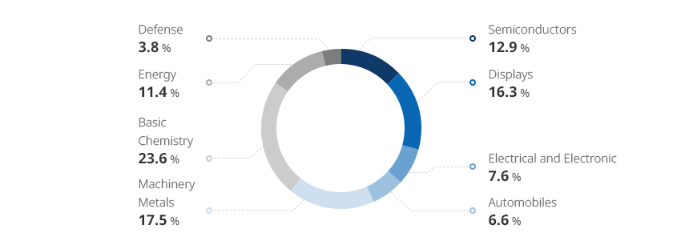
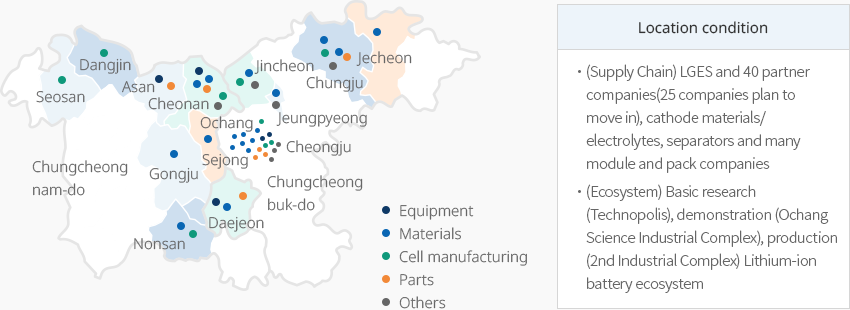
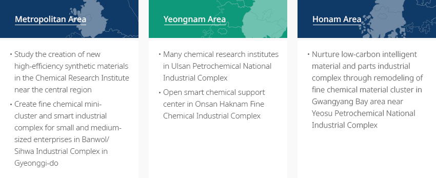
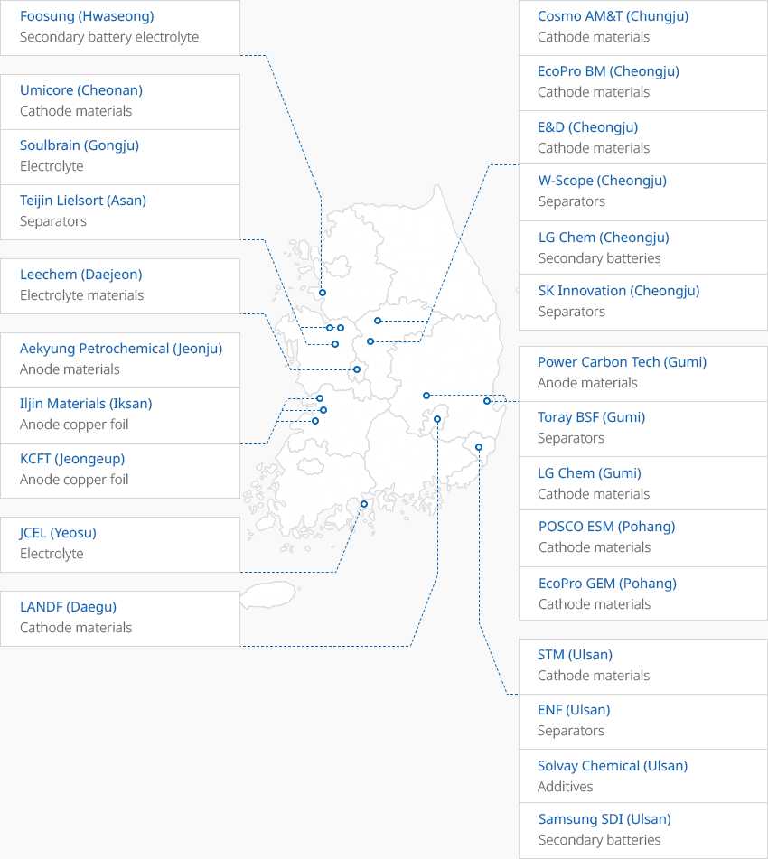
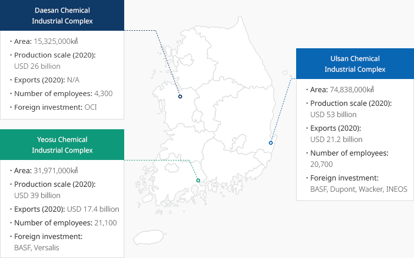

Fine Chemicals
- Home
- Why KOREA
- Industry
- Fine Chemicals
-
The World’s 5th Largest Chemical Industry CloseThe World’s 5th Largest Chemical IndustryKorea's chemical industry is huge, ranking 5th in the world in terms of shipments. The industry boasts a size of USD 158 billion and accounts for 4.0% of the global market. The ethylene production capacity of Korea, which is a standard for measuring the production capacity of a chemical industry, ranks 4th in the world. In 2020, Korea produced 9.81 million tons (5.1%) of the world’s 194.1 million tons of ethylene. Among the ICIS Top 100 Chemical Companies (ICIS, September 2021), five Korean chemical companies are listed, which are LG Chem, Lotte Chemical, SK Global Chemical, Hanwha Solutions, and GS Caltex.Korea's fine chemical industry, which includes downstream industries that can sufficiently receive stable and high-quality raw materials, has a capital/knowledge/technology-intensive structure. The industry produces core materials and application materials for various upstream industries, such as secondary batteries, automobiles, and displays. The fine chemical industry has been continuously growing, thanks to the steady growth of diverse global upstream industries.Ethylene Production Capacity in 2020 World 194.1(Unit: million tons/year)
- US 20.6
- China 16.6
- Saudi Arabia 9.1
- Korea 5.1
- Iran 3.8
- India 3.8
※ Source: Korea Petrochemical Industry Association
ICIS Top 100 Chemical Companies in 2021- 6th: LG Chem
- 23th: Lotte Chemical
- 43th: SK Global Chemical
- 73th: Hanwha Solutions
- 76th: GS Caltex
※ Source : ICIS

-
Expectations for Continued Growth Based on Various Upstream Industries and Export Growth OpenExpectations for Continued Growth Based on Various Upstream Industries and Export GrowthKorea is a manufacturing powerhouse with major chemical downstream industries, such as automobiles, electrical and electronics, textiles, construction, and plastics. On this basis, the fine chemical industry has also grown over the years. The Korean chemical industry’s largest export market is China. Exports beyond East Asia, such as Germany and the US, have continuously grown as well. Exports in 2020 recorded USD 29.95 billion (based on MTI 22) and surpassed imports, as production and domestic demand continued to grow.The global fine chemical market is a promising market that is expected to grow from USD 180.9 billion in 2021 to USD 238.7 billion by 2025, showing a high annual growth rate of 7.2%. The rapid growth of materials for displays, semiconductors, LCD/LED, and secondary batteries had led to the expansion of investment in Korean companies, such as LG Chem, SK Innovation, Lotte Fine Chemical, Hanwha Solutions, and Kumho Petrochemical.A total of 348 educational and training institutes, including KAIST and POSTECH, have established chemical-related departments, and over 30,000 highly skilled workers are produced every year. The national research infrastructure will be expanded from 18 to 51 establishments in order to strengthen the infrastructure for materials, parts and equipment. Since 2015, the proportion of researchers and testers among industrial technical personnel in the chemical field has risen to 25.3% of all chemical industry workers, which is an average annual increase of 8.3% over three years. Production-related occupations, such as operators and assembly workers, have decreased by 0.6%. The proportion of highly skilled workers is continuously increasing."Major Upstream Industries in Korea"
Major Upstream Industries in Korea Key Industries, Global Status and Major Companie’s Status Key Industries Global Reputation and Status of Major Companies Automobiles - World's 5th largest automobile producer (3.51 million units, 2020)
- Exports of eco-friendly vehicles continue to increase to 276,000 units, accounting for 19.1% of total exports, stabilizing and increasing demand for specialty chemical materials required for electric vehicles and hydrogen vehicles
System Semiconductors - Samsung Electronics plans to invest USD 114.3 billion to become no. 1 in system semiconductors by 2030.
- Soaring demand for specialty chemical materials, due to the complex structure and precision design of system semiconductors
Displays - No. 1 market share in the display market (2020)
- OLED panels achieved exports of USD 10 billion for three consecutive years, accounting for over 60% of total exports, and maintained no. 1 position in the global market
Secondary Batteries - Among domestic secondary batteries, small secondary batteries for IT have been ranked first in the world since 2011. Medium and large secondary batteries for electric vehicles are also closely following China
- Securing the technology to supply secondary batteries to global electric vehicle companies; LG, Samsung, and SK are at the top of the global EV market share
※ Source: Korea Petrochemical Industry Association, Korea International Trade Association
※ Note: Production (Left) / Domestic demand (Left) / Exports (Right) / Imports (Right) -
Foreign Companies Entering Korea In Response to the Demand from Large Upstream Industries OpenForeign Companies Entering Korea In Response to the Demand from Large Upstream IndustriesGlobal chemical companies that have entered the Korean market supply high value-added products in response to the demands from large upstream industries (semiconductors, secondary batteries, electric and electronic). In the case of foreign direct investment, the chemical industry was recorded as the industry receiving the highest amount of investment in the manufacturing industry with a reported amount of USD 777.9 million. Investments were actively made mainly in Asia, in particular, of which China invested the most with USD 390 million, and Europe also made a big investment, led by Germany.Companies from various countries, including Japan, Germany, Switzerland, and China, have entered Korea as a sole corporation or joint venture. They are actively engaged in business activities in various fields, such as functional coatings/films, secondary batteries, engineering plastics, and semiconductors."Major Global Companies in Korea"
Major Global Companies in Korea Country, Mother Company, Location, Major Products Country Mother Company Location Major Products Switzerland Oerlikon balzers Gyeonggi Pyeongtaek PVD, PACVD, base coating, coating equipment  Japan
Japan
Lintec Gyeonggi Pyeongtaek Adhesive film, film for semiconductors
Japan
Toray Gyeongbuk Gumi, Jeonbuk Gunsan Battery separator film for secondary batteries  China
China
GEM Gyeongbuk Pohang Lithium secondary battery anode material precursor  Germany
Germany
BASF Gyeongbuk Gimcheon POM(Polooxymeltylene)
Germany
Merck Gyeonggi Anseong Semiconductor packaging, thin film coating, liquid crystal material  Belgium
Belgium
Umicore Chungnam Cheonan Secondary battery cathode material
Belgium
Solvay Jeonbuk Gunsan Advanced eco-friendly silica for tire manufacturing  US
US
Air Products Gyeonggi Pyeongtaek Manufacturing industrial gas -
Actively Fostering of the Material, Parts, and Equipment Industries and Support for Upstream Industry Development OpenActively Fostering of the Material, Parts, and Equipment Industries and Support for Upstream Industry DevelopmentThe Korean government is working hard to resolve business difficulties and stabilize the supply chain.
The government supports core strategic technology information and legal analysis services through the materials, parts, and equipment policies to help companies throughout the entire process of attracting investment. In the case of the acquisition of overseas subsidiaries, 10% of the acquisition amounts are tax deductible, and support for technology internalization of up to KRW 1 billion is provided for three years to companies securing technology through M&A. A total of KRW 194.95 billion will be supported for new R&D projects under the 2021 Materials and Parts Technology Development Project (February 1, 2021), which is a follow-up project. The chemical industry will receive the biggest budget, KRW 46.01 billion, for 46 projects.The government established the 2030 K-Battery Development Strategy (July 2021) for the development of the secondary battery industry. The private sector will invest KRW 40.6 trillion by 2030 to develop element technology for materials, parts, and equipment, and a large-scale preliminary feasibility study is being pursued.
As the secondary battery technology will be designated as a national strategic technology, tax credits will be strengthened to provide tax credits to R&D (up to 40-50%) and facility investment (20%). For the semiconductor industry, demand-linked R&D for system semiconductors (KRW 30 billion every year), exclusive fund of fabless (KRW 100 billion), and tax credit sunset extension for facility investment will be offered. Over KRW 1 trillion will be invested in the next-generation semiconductor technologies, including AI semiconductors, over the next decade."2021 New R&D Budget in the Material, Parts, and Equipment Projects"
2021 New R&D Budget in the Material, Parts, and Equipment Projects Category, Number of Projects, Budget Category Semiconductors Displays Electrical and Electronic Automobiles Machinery Metals Basic Chemistry Energy Defense Total Number of Projects 26 23 17 13 28 46 22 5 181 Budget (KRW 100 million) 251.0 317.3 148.8 115.6 340.8 460.1 221.6 74.3 1,949.5 12.9% 16.3% 7.6% 6.0% 17.5% 23.6% 11.4% 3.8% 100.0% ※ Source: Ministry of Trade, Industry and Energy
※ Source: 2021 Material and Parts Technology Development Project -
Establishment of Fine Chemical Industry Clusters and Designation of Materials, Parts, and Equipment Specialized Complex OpenEstablishment of Fine Chemical Industry Clusters and Designation of Materials, Parts, and Equipment Specialized ComplexThe fine chemical industry cluster can be divided into the metropolitan area, Yeongnam area, and Honam area. Fine chemical clusters are located together around Ulsan, Yeosu, and Onsan industrial complexes. The local government provides support through the Chemistry Research Center, Chemistry Support Center, and the low-carbon intelligent material and parts industrial complex.Through the designation of a specialized complex for materials, parts and equipment (February 23, 2021), the government gathers key materials, parts, and equipment demand-supply companies and infrastructure. Clusters are created to serve as factories for high-tech industries worldwide. Among the five designated specialized materials, parts, and equipment complexes, Yongin Semiconductor Cluster, Ochang Secondary Battery Industrial Complex, and Cheonan/Asan Display Industrial Complex and three techno valleys serve the chemical upstream industries. R&D in complementary fields, export support, professional researcher support, and investment incentives are provided through value chain analysis.The secondary battery materials, parts, and equipment specialized complex houses a number of chemical companies, which are involved in the production of cathode materials, electrolytes, and separators, and work hard to strengthen the supply chain. A lithium-ion battery ecosystem is created to provide support for more active growth of companies."Secondary Battery Materials, Parts, and Equipment Specialized Complex"Location condition
- (Supply Chain) LGES and 40 partner companies (25 companies plan to move in), cathode materials/electrolytes, separators and many module and pack companies
- (Ecosystem) Basic research (Technopolis), demonstration (Ochang Science Industrial Complex), production (2nd Industrial Complex) Lithium-ion battery ecosystem
※ Source: 2030 secondary battery industry development strategy"Main Content by Region"-
Metropolitan Area
- Study the creation of new high-efficiency synthetic materials in the Chemical Research Institute near the central region
- Create fine chemical mini-cluster and smart industrial complex for small and medium-sized enterprises in Banwol/Sihwa Industrial Complex in Gyeonggi
-
Yeongnam Area
- Many chemical research institutes in Ulsan Petrochemical National Industrial Complex
- Open smart chemical support center in Onsan Haknam Fine Chemical Industrial Complex
-
Honam Area
- Nurture low-carbon intelligent material and parts industrial complex through remodeling of fine chemical material cluster in Gwangyang Bay area near Yeosu Petrochemical National Industrial Complex
"Distribution of Secondary Battery Factories"-
Hwaseong
- Foosung: Secondary battery electrolyte
-
Chungju
- Cosmo AM&T: Cathode materials
-
Cheongju
- EcoPro BM: Cathode materials
- E&D: Cathode materials
- W-Scope: Separators
- LG Chem: Secondary batteries
- SK Innovation: Separators
-
Cheonan
- Umicore: Cathode materials
-
Gongju
- Soulbrain: Electrolyte
-
Asan
- Teijin Lielsort: Separators
-
Daejeon
- Lichem: Electrolyte materials
-
Jeonju
- Aekyung Petrochemical: Anode materials
-
Iksan
- Iljin Materials: Anode copper foil
-
Jeongeup
- KCFT: Anode copper foil
-
Gumi
- Toray BSF: Separators
- Power Carbon Tech: Anode materials
- Lg Chem: Cathode materials
-
Pohang
- Posco ESM: Cathode materials
- EcoPro GEM: Cathode materials
-
Yeosu
- JCEL: Electrolyte
-
Ulsan
- STM: Cathode materials
- ENF: Separators
- Solvay Chemical: Additives
- Samsung SDI: Secondary batteries
-
Daegu
- LANDF: Cathode materials
※ Data provided by: Korea Institute for Industrial Economics and Trade"Three Chemical Industrial Complexes in Korea"Daesan Chemical Industrial Complex- Area : 15,325,000 ㎢
- Production scale(’20) : USD 26 billion
- Exports(’20) : N/A
- Number of employees : 4,300
- Foreign investment : OCI
Ulsan Chemical Industrial Complex- Area : 74,838,000 ㎢
- Production scale(’20) : USD 53 billion
- Exports(’20) : USD 21.2 billion
- Number of employees : 20,700
- Foreign investment : BASF, Dupont, Wacker, INEOS
Yeosu Chemical Industrial Complex- Area : 31,971,000 ㎢
- Production scale(’20) : USD 39 billion
- Exports(’20) : USD 17.4 billion
- Number of employees : 21,100
- Foreign investment : BASF, Versalis
※ Source: Korea Petrochemical Industry Association (KPIA)"Major Investment"Major Investment Year, No, Investor, Field, Investment Location (in Korea), Reasons for Investment Year No. Investor Field Investment Location
(in Korea)Reasons for Investment 2019 1 A社 (US) General chemistry Chungnam Cheonan Industrial gas plant expansion 2 S社 (Belgium) Special chemistry Jeonbuk Gunsan Eco-friendly tire materials production plant expansion 3 U社 (Belgium) Secondary batteries Chungnam Cheonan Secondary battery materials production plant expansion 2020 1 H社 (China) General chemistry Jeonnam Gwangyang Aluminum factory construction (Utilize FTA export model) 2 T社 (Japan) Special chemistry Gyeongbuk Gumi Advanced materials plant expansion (carbon fiber) 3 N社 (China) Secondary batteries Chungbuk Chungju Secondary battery cathode plant construction 2021 1 A社 (Australia) Strategic resources Chungbuk Ochang Rare earth and rare metal plant construction 2 R社 (US) Special chemistry Jeonnam Yeosu Eco-friendly adhesive plant construction through JV 3 H社 (China) Secondary batteries Jeonnam Gwangyang Battery recycle plant construction through JV


Invest KOREA
Recommendation on Locations
Industrial complex information
[Chungcheongbuk-do Chungju City] Manjeong General Industrial
Complex
Click [Go to Detailed Information] to go to the relevant information screen of
Smart K-Factory service of Industrial Complex Corporation.
-
Complex nameManjeong General Industrial Complex
-
Initial designation date2010.02.05
-
Designated area(m2)50,401
-
ManagementChungcheongbuk-do Chungju City
-
Nearby RailwayDalcheon Station
-
Distance from station(km)5
-
Nearby AirportCheongju International Airport
-
Distance from airport(km)51
-
Industrial water Supply capacity(ton/day)177(㎥/day)
-
Affiliation local governmentChungcheongbuk-do Chungju City
-
Population210,304
Industrial complex information
[Ulsan Metropolitan City Nam-gu] Ulsan Techno General Industrial
Complex(Ulsan Free Economic Zone)
Click [Go to Detailed Information] to go to the relevant information screen of
Smart K-Factory service of Industrial Complex Corporation.
-
Complex nameUlsan Techno General Industrial Complex(Ulsan Free Economic Zone)
-
Initial designation date2013.06.20
-
Designated area(m2)1,286,977
-
ManagementUlsan Metropolitan City
-
Nearby RailwayTaehwagang Station
-
Distance from station(km)9
-
Nearby AirportUlsan Airport
-
Distance from airport(km)15
-
Industrial water Supply capacity(ton/day)2614(㎥/day)
-
Affiliation local governmentUlsan Metropolitan City Nam-gu
-
Population1,140,310
Industrial complex information
[Jeollabuk-do Gunsan City] Imphi Agricultural Industrial Complex
Click [Go to Detailed Information] to go to the relevant information screen of
Smart K-Factory service of Industrial Complex Corporation.
-
Complex nameImphi Agricultural Industrial Complex
-
Initial designation date2011.06.20
-
Designated area(m2)239,156
-
ManagementJeollabuk-do Gunsan City
-
Nearby RailwayDaeya Station
-
Distance from station(km)7
-
Nearby AirportGunsan Airport
-
Distance from airport(km)31
-
Industrial water Supply capacity(ton/day)426(㎥/day)
-
Affiliation local governmentJeollabuk-do Gunsan City
-
Population267,982
Industrial complex information
[Chungcheongnam-do Yesan County] Yesan New Material General Industrial
Complex
Click [Go to Detailed Information] to go to the relevant information screen of
Smart K-Factory service of Industrial Complex Corporation.
-
Complex nameYesan New Material General Industrial Complex
-
Initial designation date2011.06.16
-
Designated area(m2)483,670
-
ManagementChungcheongnam-do Yesan County
-
Nearby RailwaySillyewon Station
-
Distance from station(km)22
-
Nearby AirportCheongju International Airport
-
Distance from airport(km)87
-
Industrial water Supply capacity(ton/day)788(㎥/day)
-
Affiliation local governmentChungcheongnam-do Yesan County
-
Population78,420
Industrial complex information
[Busan Metropolitan City Gijang County] Busan New Material General
Industrial Complex
Click [Go to Detailed Information] to go to the relevant information screen of
Smart K-Factory service of Industrial Complex Corporation.
-
Complex nameBusan New Material General Industrial Complex
-
Initial designation date2013.01.16
-
Designated area(m2)255,229
-
ManagementBusan Economic Promotion Agency
-
Nearby RailwayBusan Station
-
Distance from station(km)47
-
Nearby AirportGimhae International Airport
-
Distance from airport(km)48
-
Industrial water Supply capacity(ton/day)0.27(㎥/day)
-
Affiliation local governmentBusan Metropolitan City Gijang County
-
Population172,288
Industrial complex information
[Jeollanam-do Mokpo City] Ceramic General Industrial Complex
Click [Go to Detailed Information] to go to the relevant information screen of
Smart K-Factory service of Industrial Complex Corporation.
-
Complex nameCeramic General Industrial Complex
-
Initial designation date2009.06.05
-
Designated area(m2)116,361
-
ManagementJeollanam-do Mokpo City
-
Nearby RailwayMokpo Station
-
Distance from station(km)5
-
Nearby AirportMuan International Airport
-
Distance from airport(km)36
-
Industrial water Supply capacity(ton/day)-
-
Affiliation local governmentJeollanam-do Mokpo City
-
Population226,875